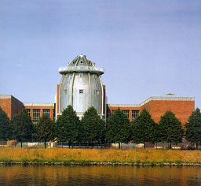
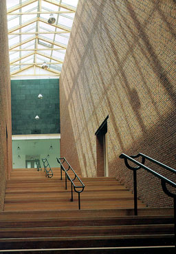
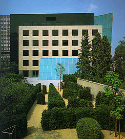
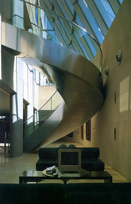
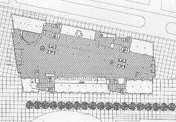
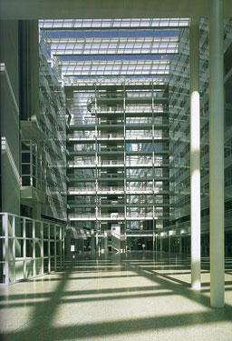
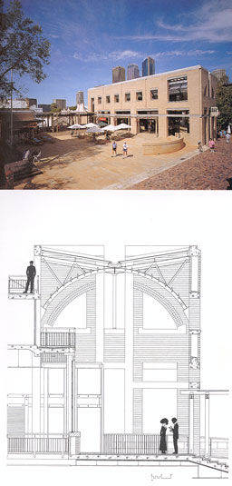
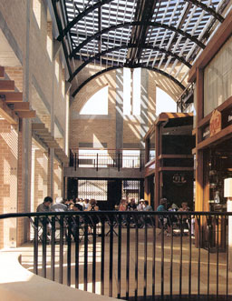

Bonnefanten Museum, Maastricht, The Netherlands, 1990-1994
Aldo Rossi

Contemporary European Architects; Volume IV
Taschen |
The designs of Aldo Rossi look austere but
by the way he let light and space play around the materials gives
the designs a strong appearance and own identity. The Bonnefanten
Museum made of Dutch brick, Irish limestone and zinc has an industrial
appearance. This fits in well with the historical context of
the location. The interior is straightforward caused by the brick,
timber floors and simple details. On the photograph on the right
the monumental staircase can be seen. The enormous windows above
the brick side-walls provide for daylight. It even looks like
you're walking in the open air. The light brushes from above
past the walls so the texture of the walls are good to been seen. |
 |
Banque de Luxembourg, Luxembourg, 1989-1994
Arquitectonica

Contemporary American Architects Volume II
Philip Jodidio |
This bank was the first European project of
Arquitectonica in Europe. It is located on an angle of the Boulevard
Royal in the centre of the city. Arquitectonica has used several
different forms to achieve an expression of progression. As you
can see on the left picture one form exists of Chassagne stone
with dark windows, one of tinted green glass and one of black
granite. The form existing of glass at the bottom of the building
gives daylight to the lower level banking hall. On the other
picture you see that the hall obtains its light only from above
because it is situated below ground level.
|
 |
The City Hall and Central Library, The Hague, Netherlands, 1986-1995
Richard Meier

Contemporary American Architects Volume II
Philip Jodidio
Taschen |
Richard Meier has a recognisable style making
often use Modernist white forms on a geometrical grid with a
great variety of expression. The City Hall and Central Library
are located near the Central Station in the centre of The Hague.
The alignment of the city streets inspired Richard Meier to introduce
a 12.5° rotation in the two main grids, corresponding two
high buildingblocks. Between these blocks a 47 meter high atrium
arises. As you can see on the picture, daylight coming from above
also provides the offices situated nearby the atrium for light.
|
 |
|
The Rocks Square, Sydney, Australia
Tonkin Zulaikha HarfordAward Winning Australian Architecture
Neville Quarry |
This building is an public place made of
brick, steel and timber. The building is designed in a way that
it will be highly used. Visibly the whole blends well and lifts
the overall quality. The use of bricks and woods creates a softly
pleasant atmosphere. The form is robust and sympathetic so it
will attract the people walking by. The glass roof structure
in the middle of the building gives the interior an open atmosphere
but also moderates the internal climate. The louvers are constructed
in two layers in different directions to protect the building
from blinding daylight. The structure can be seen on the second
picture on the left.
|
 |
|
|
|
|
|
|
|
|
|
|
|
|